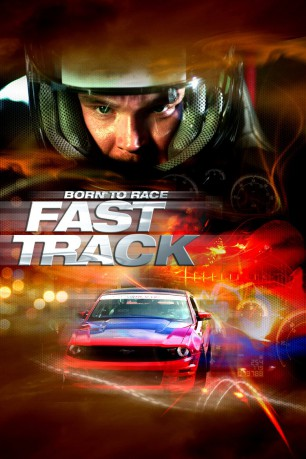
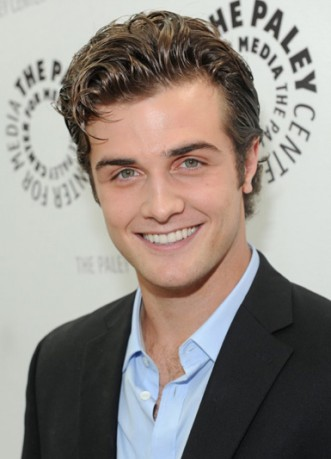
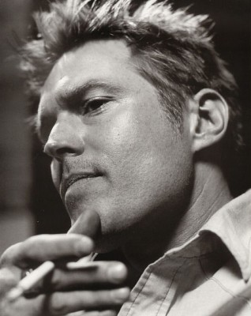

#5951 Born to Race: Fast Track
 
 IMDB-Wertung: 5.5 / 10
IMDB-Wertung: 5.5 / 10  Metascore: 0
Metascore: 0 
Als die beiden rivalisierenden Kleinstadt-Rennfahrer Danny Krueger und Jake Kendall zusammenarbeiten müsssen, um den Weltklasse-Champion Enzo Lauricello zu besiegen, wird daraus ein Wettkampf ums Überleben des Schnellsten auf dem Weg zur Ziellinie.
Jahr: 2014
Dauer: 93 Minuten
FSK:
Land: USA Studio: Anchor Bay EntertainmentTonspuren: DTS - ,
Untertitel: Deutsch,
Auflösung: 1080p (1920x816) Größe: 3717 MB
Genre: Action
Regisseur: Alex Ranarivelo
Drehbuch: Brad Gann
Soundtrack:
Darsteller:
- Brett Davern als Danny Krueger
-  Beau Mirchoff als Jake Kendall
-  Bill Sage als Frank
- Sharon Lawrence als Mrs. Dalton
- Nicole Badaan als Jessica Dalton
- Tiffany Dupont als Michelle
- Steve Bond als Richard Duncannon
 Corbin Bernsen als Liam Sterling
Corbin Bernsen als Liam Sterling- Grant Show als Jimmy Kendall
- Diogo Morgado als Enzo Lauricello
- Alberto Frezza als Paulo Lauricello
- Jesse Luken als Luke
 Ali Afshar als Himself
Ali Afshar als Himself- Alex Schemmer als Markus
- Jussie Smollett als Tariq
 James Kyson als Tak
James Kyson als Tak- Eddie Hassell als Max
 Jordi Caballero als Giancarlo Lauricello
Jordi Caballero als Giancarlo Lauricello- Seth Coltan als Mark
 Mel Fair als TV Reporter
Mel Fair als TV Reporter- Erika Othen als Giancarlo's Wife
- Tatum Shank als Whelen Crew Chief
- Markus Silbiger als Brock
- Erik Sords als Clint
- Leo Arroyo als Race car driver
- Keyla Childs als Waitress
- Ben Lemon als Announcer
Datei: X:\2-Dilogie(A-F)\Born to Race\Born to Race Fast Track (2014, FSK, 1920x816).mkv seit 09.04.2017
Festplatte: HD Collection-2(A-Z)-3(A-M)
 Alle Filme aus Gruppe '2-Dilogie(A-F)\Born to Race'
Alle Filme aus Gruppe '2-Dilogie(A-F)\Born to Race'